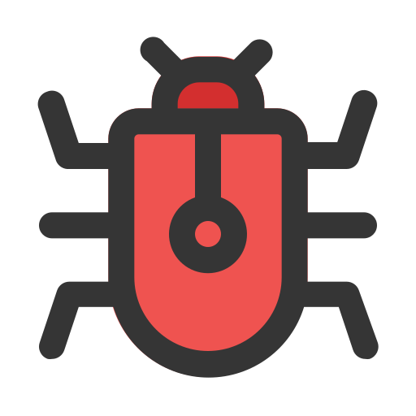

Verstehen und verhindern: Die größten Risiken im Netz
Unsere online vernetzte Welt birgt viele Gefahren für die Sicherheit unserer Geräte und persönlichen Daten. Schadhafte Software, betrügerische E-Mails und Angriffe auf vernetzte Geräte sind nur einige der Bedrohungen, denen wir täglich ausgesetzt sind. Doch keine Sorge: Mit dem richtigen Wissen und den passenden Maßnahmen können Sie sich effektiv schützen. Im Folgenden erklären wir die häufigsten Cyberbedrohungen und zeigen Ihnen, wie Sie sich davor wappnen können.
Malware
Schädliche Software, die Computer infiziert und Daten stehlen oder beschädigen kann. Dazu gehören Viren, Trojaner und Ransomware.
mehr erfahrenPhishing
Betrügerische Versuche, sensible Informationen wie Passwörter oder Kreditkartendaten durch gefälschte E-Mails oder Websites zu erlangen.
mehr erfahrenIdentitätsdiebstahl
Kriminelle stehlen persönliche Daten, um sich als das Opfer auszugeben und in dessen Namen Kredite aufzunehmen oder Einkäufe zu tätigen.
mehr erfahrenSocial - Engineering
Psychologische Manipulation, um Menschen zur Preisgabe vertraulicher Informationen zu bewegen.
mehr erfahrenIoT - Angriffe
.png)
Hacker nutzen Schwachstellen in vernetzten Geräten wie Smartspeakern oder Überwachungskameras, um in private Netzwerke einzudringen.
mehr erfahrenDatenlecks
Unbefugter Zugriff auf persönliche Daten durch Sicherheitslücken in Unternehmen oder Organisationen.
mehr erfahrenManInTheMiddle - Angriffe
Abfangen von Informationen zwischen zwei Kommunikationspartnern, oft in öffentlichen WLANs
mehr erfahren